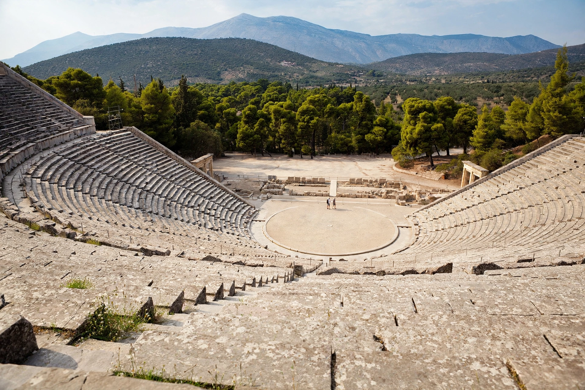

Greek tragedy
From Wikipedia, the free encyclopedia

Greek tragedy is a form of theatre from Ancient Greece and Anatolia, performed at religious festivals in honour of Dionysus from the late sixth century BC. Its surviving masters are Aeschylus, Sophocles and Euripides, whose plays — drawn from myth and heroic legend — explored fate, hubris, justice and suffering before audiences of thousands in open-air theatres such as the Theatre of Dionysus at Athens.
Origins and performance
Tragedy developed from the choral Dithyramb; Thespis is credited with stepping out of the chorus as the first actor (traditionally 534 BC). Plays were staged in competitions at the City Dionysia: each of three tragedians presented three tragedies plus a Satyr play. A Chorus of twelve to fifteen sang and danced in the orchestra, commenting on the action, while masked actors — never more than three speaking at once — played all the roles, including women.
Structure and themes
Aristotle's Poetics analysed the form: a unified plot moving through reversal (peripeteia) and recognition (anagnorisis) to Catharsis, centred on a protagonist of stature brought down by error (hamartia). Masterpieces include Sophocles' Oedipus Rex and Antigone, Euripides' Medea and The Bacchae, and Aeschylus's Oresteia. Of hundreds of tragedies, only thirty-two survive complete.
Legacy
Greek tragedy founded Western drama: its myths and structures were reworked by Seneca, Racine, Shakespeare's contemporaries, modern playwrights from Anouilh to O'Neill, and by opera and film; its vocabulary (hubris, catharsis, nemesis) remains part of critical language.